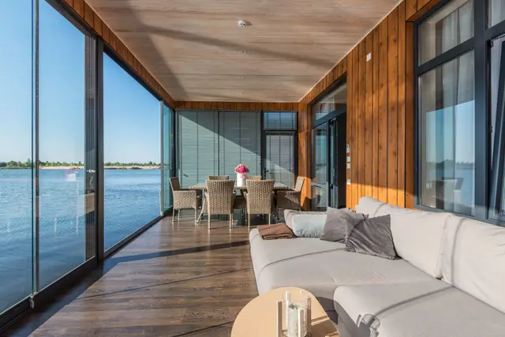

hero-home registered
/ · Hero (LCP)
Arrival promise: a bright, calm pool terrace of a contemporary tropical city hotel, water and greenery under open sky, welcoming at first glance.
Reassigned: the Premier River View frame (Pexels 7546599) is the home hero; also cut as hero-home-m (4:5).
- Credit
- Max Vakhtbovych on Pexels 7546599
- Licence
- Pexels License (free to use, checked 2026-10-08)
- Brightness
- 130.6
- Tone
#9c9a98